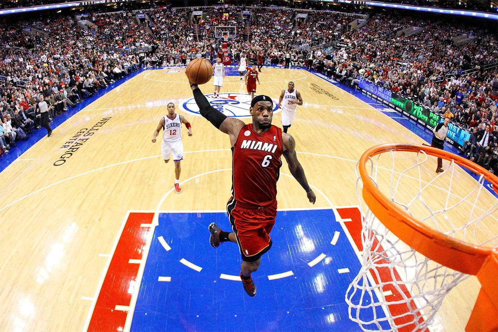

About NBA
The National Basketball Association (NBA) is a professional basketball league in North America composed of 30 teams (29 in the United States and 1 in Canada). It is one of the major professional sports leagues in the United States and Canada and is considered the premier professional basketball league in the world.
The league was founded in New York City on June 6, 1946, as the Basketball Association of America (BAA). It changed its name to the National Basketball Association on August 3, 1949, after merging with the competing National Basketball League (NBL). In 1976, the NBA and the American Basketball Association (ABA) merged, adding four franchises to the NBA. The NBA's regular season runs from October to April, with each team playing 82 games. The league's playoff tournament extends into June. As of 2020, NBA players are the world's best paid athletes by average annual salary per player.
The NBA is an active member of USA Basketball (USAB), which is recognized by the FIBA (International Basketball Federation) as the national governing body for basketball in the United States. The league's several international as well as individual team offices are directed out of its head offices in Midtown Manhattan, while its NBA Entertainment and NBA TV studios are directed out of offices located in Secaucus, New Jersey. In North America, the NBA is the third wealthiest professional sport league after the National Football League (NFL) and Major League Baseball (MLB) by revenue, and among the top four in the world.
The Boston Celtics and the Los Angeles Lakers are tied for the most NBA championships with 17 each. The reigning league champions are the Denver Nuggets, who defeated the Miami Heat in the 2023 NBA Finals.